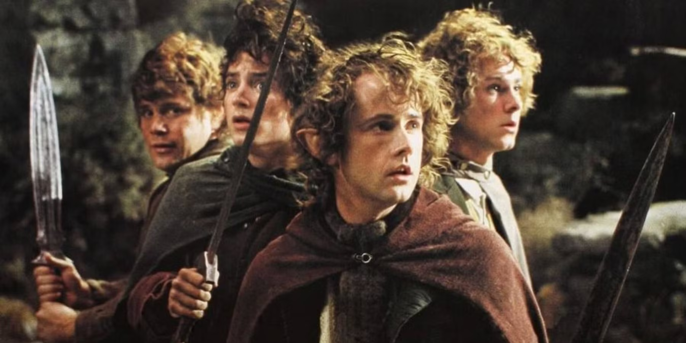
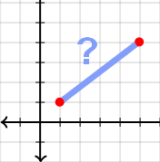
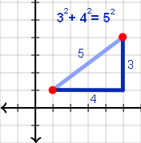
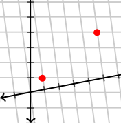
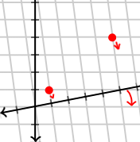

Have you ever wondered which Disney Princess you are? Or which celebrity would secretly hate you? Or even the Taylor Swift song that best fits your personality?
Well over at Buzzfeed, you have the ability to find out! Each of these quizzes take the answers you enter, make some kind of inference about who you are, and then give you a result based on that inference. Their goal is to assess your personality, then match it to one of the quizzes’ predetermined options. Sounds pretty cool, right?
Unfortunately, under the hood, it’s not so glamorous. For every quiz question, the available answers are connected to one of the potential outcomes. Every answer you choose contributes one point to the outcome its associated with. At the end of the quiz, whichever outcome has the most points is selected as your best match.
That’s so lame.
I mean, come on. Basic counting? Personality has the potential for so so so much more!
Now, to be clear, this approach accomplishes Buzzfeed’s goal of easy-to-make-and-take personality quizzes. From a business perspective, it’s clearly a good model. But the focus of this post is not business models. It’s personality models, and in that realm, multivariate statistics allow us to do much better.
So, if our goal here is to actually assess someone’s personality and then find the closest match to it, how do we go about doing that?
There are two implications in that question and we’ll need to address both before we arrive at our eventual answer. The assumptions are (1) that personality is something we can quantify and, (2) that, once quantified, we have a way to measure how “close” or “far” one personality is from another.
Let’s address these, one at a time.
1) Personality is quantifiable
How do we turn something abstract, like personality, into something concrete, like numbers?
Conveniently for us, scientists have been studying this topic for a while now and the answer the field has settled on is that we can reliably piece apart a personality into just five different traits. We assign a score for each trait and then view the unique combination of those scores as someone’s personality.
The traits are openness to experience, conscientiousness, extraversion, agreeableness, and neuroticism, but those details aren’t really important right now. If you’d like learn more, I’d recommend reading the wikipedia article!
What matters here is that we have a way to represent personality numerically. We ask someone a series of questions, use their answers to arrive at a score on each of the five identified traits (let’s put them a 1 - 5 scale for now), and then view those scores as a representation of personality. For example, we might get an outcome like:
| Name | Openness | Consc. | Extrav. | Agree. | Nuerot. |
|---|---|---|---|---|---|
| Reader | 3 | 3 | 3 | 5 | 1 |
This “Reader” would be average in most ways, but very easy to get along with and, emotionally, quite stable. Now, let’s compare their personality to a set of others and see if we can figure out which they’re closest to. I’m a big Lord of the Rings fan, so we’ll comare them to an iconic band of hobbits:

| Name | Openness | Consc. | Extrav. | Agree. | Neruot. |
|---|---|---|---|---|---|
| Reader | 3 | 4 | 2 | 4 | 1 |
| Frodo | 3 | 4 | 2 | 4 | 3 |
| Sam | 3 | 5 | 3 | 4 | 1 |
| Merry | 2 | 4 | 3 | 3 | 1 |
| Pippin | 4 | 1 | 5 | 5 | 2 |
Unfortunately, there don’t appear to be any perfect matches between our reader and the hobbits. So, how do we figure out who is closest?
2) Measuring “Distances” Between Personalities
If we’d quantified personality using just one number, measuring the distances between them would be easy. We could just subtract one personality number from another, and the closer the result is to “0”, the closer the personalities would be. Instead, however, our personalities consist of five separate dimensions, so we have to compare five separate numbers all at once.
We could try taking the differences between every trait one by one and then add those differences together to get a “summed” difference. Looking at our hobbits example:
| Name | Openness | Consc. | Extraversion | Agree. | Neruot. |
|---|---|---|---|---|---|
| Reader | 3 | 4 | 2 | 4 | 1 |
| Frodo | 3 | 4 | 2 | 4 | 3 |
| Sam | 3 | 5 | 3 | 4 | 1 |
| Merry | 2 | 4 | 3 | 3 | 1 |
| Pippin | 4 | 1 | 5 | 5 | 2 |
We would find that Frodo has a “summed distance” of 2 (just two points away on neuroticism from our reader) while Pippin has a “summed distance” of 9 (one point away on openness, agreeableness, and neuroticism and three points away on both conscientiousness and extraversion). As Frodo’s summed score is smaller, we can say our reader is closer to Frodo than they are to Pippin.
But there’s a problem with this method—and one that the astute reader may already have noticed. If we apply this logic to all the hobbits, we find that Sam also has a “summed distance” of 2 (one point away on conscientious and one on extraversion). Both Frodo and Sam have a “summed distance” of 2, but with distinct ways of reaching that number. Frodo is two points away on one dimension while Sam is one point away on two dimensions.
So, who is closer?
The Pythagorean Theorem Almost Tells Us
Lucky for us, an insightful mathematician came up with a way to calculate just this sort of thing - and they did it 4,000 years ago! However, it wasn’t until Pythagorus came along about 1,500 years after that that the technique became widely known: the Pythagorean theorem.
\[ A^2 + B^2 = C^2 \]
Now, that’s a formula with mathematical meanings, but I’m going to visualize what’s going on here because the visual will help us understand the multivariate statistics that come next. Basically, imagine this: There are two dots on a plane. we have one dot at point (1,1) and the next dot at point (5, 4). How far are these two points from each other?

Simple subtraction doesn’t quite work here, so we’ll need the Pythagorean theorem to help. It says that the distance between these two points is equal to the square root of the sum of the squares of each of the two perpendicular sides. That’s a lot of words, but basically it’s just saying that we can figure out how far it is diagonally by looking at how far it is horizontally and vertically, so long as it’s formed as a right triangle.

Alright, great! So that’s how we do it when there’s two dimensions. Now how do we do it when there’s five? Remember, every personality has five scores so we have to do it five times.
\[ A^2 + B^2 + C^2 + D^2 + E^2 = F^2 \]
Thankfully, we can actually extend the Pythagorean formula to as many dimensions as we want! And even if that gets hard to visualize, the math still works.
The Problem With Pythagorus
There’s just one issue. In order for this theorem to work, we need to use right triangles. That means our axes need to intersect at 90 degree angles and that means our personality dimensions need to be orthogonal or, in other words, need to be uncorrelated.
Unfortunately, personality dimensions are definitely correlated.
Why does this matter? Well, imagine that instead of having a graph with two perfectly perpendicular axes, it looked something like this instead:

Here, as you go up on the X-axis, you’re ALSO starting to go up on the Y-axis: there’s a correlation.
This breaks the Pythagorean theorem. In order for the theorem to work, we need to know the coordinates from perpendicular axes, otherwise we can’t make a right triangle. But if our dimensions correlate, our axes aren’t perpendicular.
Oh dear. What can be done?
Multivariate’s Solution: Mahalanobis Distances
Luckily, once again, a statistician saves our day. It was back in 1936 that a man by the name P. C. Mahalanobis kept running into this very problem and decided to try and find a way to fix it. What he figured out was that if you know the correlation between two measures, you can correct the axes using that information! To put that in terms of the visual, if we know that the X-axis is being tilted up by 10 degrees, we can just adjust all of our numbers down by 10 degrees to put them back in their proper place.

It takes some linear algebra to accomplish, but the important part is this: all we have to do is figure out how much our axes are tilting (or how much they’re correlating1) and we can correct our numbers, allowing us to solve the distance equation once again! Using this paper’s findings on correlations between the traits, we find that our hobbit of choice is Sam!
Mahalanobis Distances:
- Sam: 2.89
- Merry: 4.43
- Frodo: 7.42
- Pippin: 43.47
And, with that, we have a more accurate way to assess not only personalities, but also the distances between them.
Footnotes
Technically, Mahalanobis distances use covariance matrices instead of correlation matrices, but the underlying concept is the same.↩︎